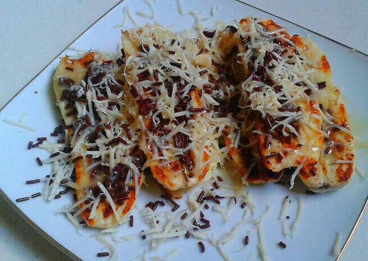

Berhari-hari sumpek banget liat banyak pisang di kulkas ngga ada yg makan. Berhubung tiap malem hujan dan pastinya dingin jadi langsung bikin yg anget2 deh 😀
Bahan-bahan untuk membuat Pisang Bakar Coklat Keju:
- -10 pisang raja matang
- -3 sendok makan margarin
- -3 sendok makan keju oles
- -3 sendok makan susu coklat
- -3 sendok makan mesis coklat
- -Secukupnya parutan keju
Langkah-langkah:
- 1.Pipihkan pisang dengan sendok, kupas kulitnya lalu belah pisang dan olesi belahan pisang dengan keju oles.
- 2.Olesi seluruh permukaan luar pisang dengan margarin lalu panggang diatas teflon.
- 3.Jika sudah dibolak-balik dan berwarna kecoklatan pisang siap disajikan dengan siraman susu coklat,taburan keju dan mesis coklat 😁